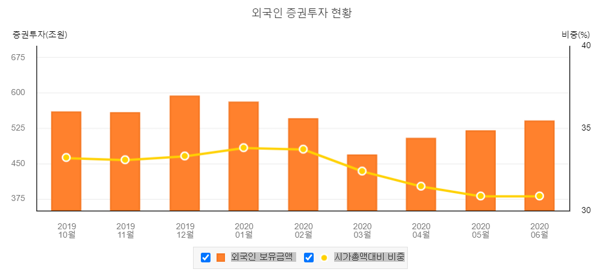
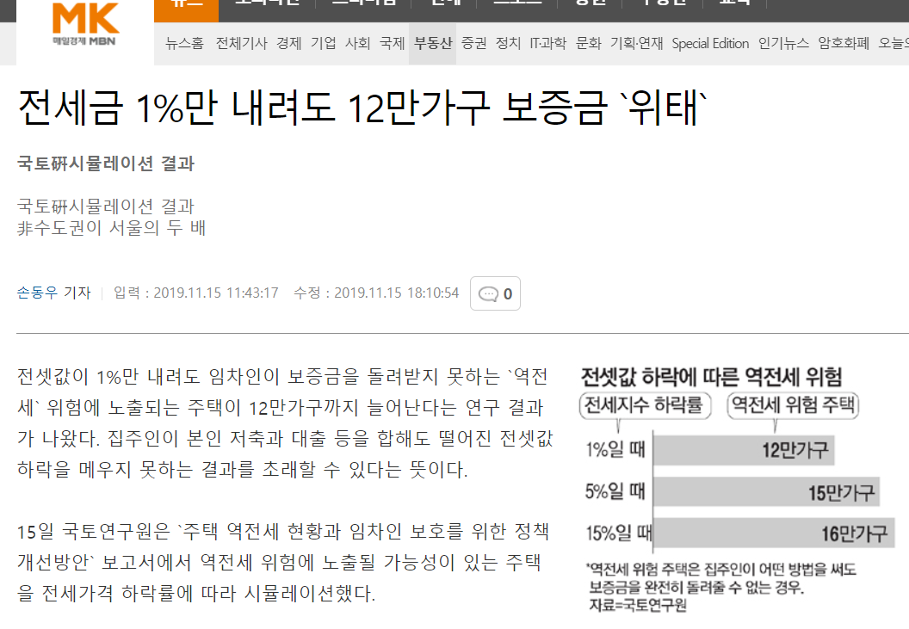
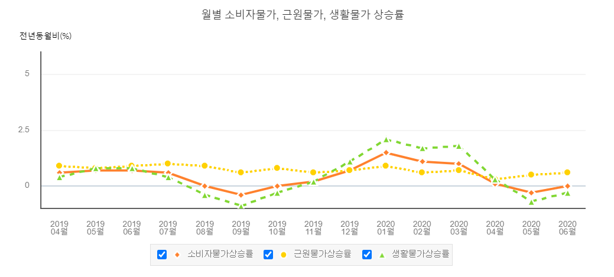
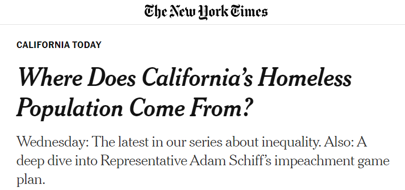
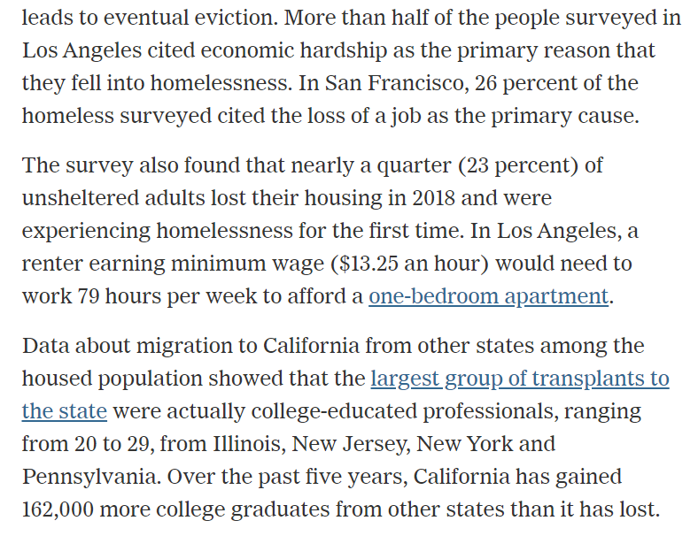
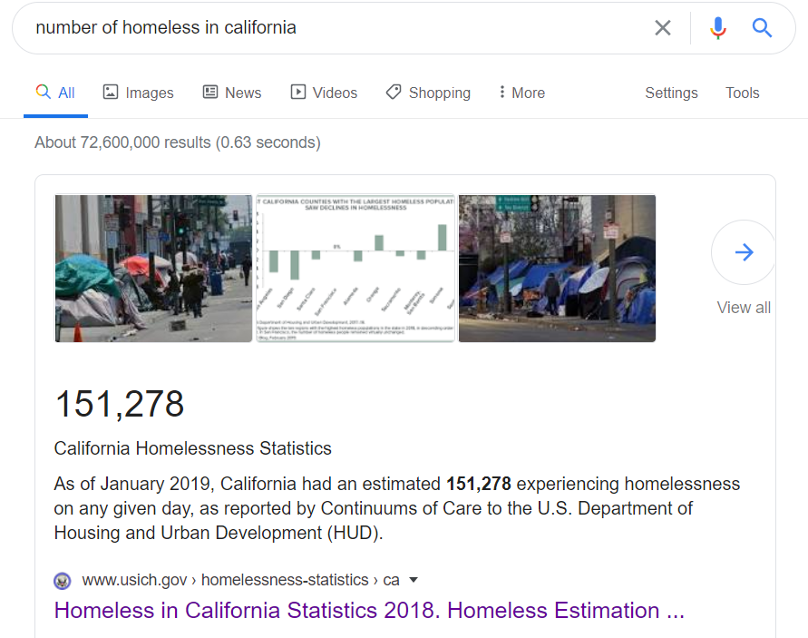
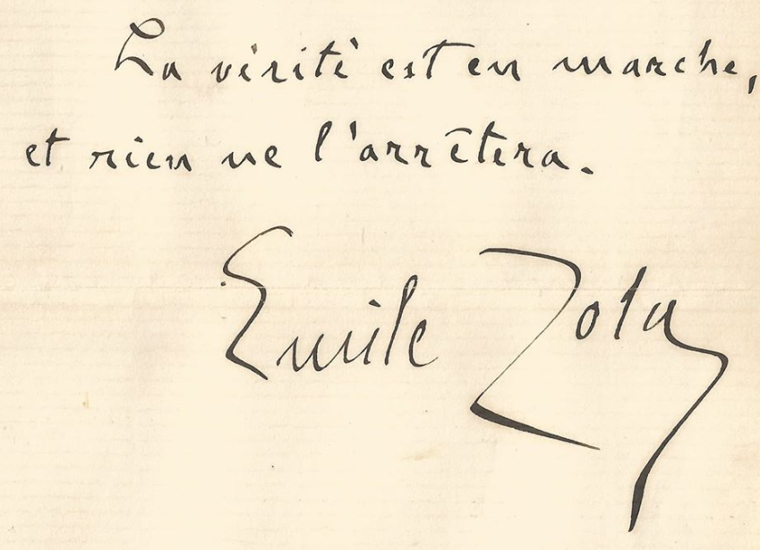

임대차 3법으로 전세가 사라지고 월세로 전환될 것인가?
게시: 2020-08-03T06:30:23+09:00
지난 주 5분간의 명연설이라는 야당 의원 연설을 보수 언론에서 진짜 명연설이라고 추켜세우길래 읽어보았습니다. 결론적으로는 왜 이걸 명연설이라고 하는지 전혀 이해를 못하겠습니다. 저 연설 내용에서 주장하는 바를 요약하면 결국 이렇습니다. 1. 전세가 없어지고 월세로 전환될 것이고 그건 무주택자들에게 불리한 결과가 될 것이다. 2. 집주인이 전세 물건을 시장에서 빼내어 친인척에게 살게 만들 것이다. 제가 볼 때는 오버입니다. 그럴 가능성 높지 않습니다. 이번 임대차법 개정안은 단순화해서 말하면 그냥 2년의 전세 보증기간을 4년으로 늘린 것 뿐입니다. 호들갑 떨 것이 전혀 없습니다. 단지 2년 보증기간이 4년으로 늘었다고 전세를 월세로 돌리겠다 ? 기본적으로 말이 안 되는 소리입니다. 여태까지는 임대인들이 임차인들의 편의를 봐주기 위해 너그러운 마음으로 전세를 주었던 것이 아닙니다. 전세란 알고보면 개인간의 무이자 사금융입니다. 집을 쓰게 해주는 대가로 큰 액수의 돈을 무이자로 빌려주는 채권이지요. 그 전세금에 해당하는 액수의 돈이 없었기 때문에 임대인은 임차인들에게 돈을 꾸었던 것입니다. 그런데 그걸 다 돌려주고 월세로 바꾸겠다 ? 애초에 그 돈이 필요 없었다면 전세를 주었을 턱이 없습니다. 돈 많은 집안도 많습니다. 그런 집에서도 굳이 월세를 안 주고 전세를 주었던 이유가 있는데, 바로 임차인에게서 받은 전세금으로 다른 집을 또 사는 것입니다. 그렇게 산 집은 또 전세를 주면 되니까, 집 한 채 가격으로 집 2채를 살 수 있었던 것이지요. 왜 자기가 살 지도 않을 것이고 월세를 받을 수도 없는 집을 굳이 2채나 샀을까요 ? 재산세를 더 내고 싶어서요 ? 간단합니다. 집값이 오를 것 같으니까요. 더 쉽게 말해서 전세 제도를 이용해서 갭투자를 한 것입니다. 그런 갭투자 때문에 주택 가격은 끝없이 오른 것이고, 그 갭투자의 원천은 바로 전세 제도입니다. 갭투자가 나쁜 것이냐고요 ? 아닙니다. 불법이 아닌 이상 나쁜 일이 아닙니다. 나쁜 것은 그렇게 갭 투자를 아무 세금 부담 없이 쉽게 쉽게 할 수 있게 허술한 임차인 보호제도와 세법을 만들어준 국회입니다. 그나마 이번에 2년을 4년으로 늘려준 것이 미약하나마 개선된 것입니다.

우리나라 전세금 규모는 생각보다 엄청납니다. 보수적으로 계산해도 750조원으로 추정되고 실제로는 더 클 거라고 예상되는데, 이는 우리 정부 1년 예산 520조를 껑충 뛰어넘는 엄청난 액수입니다. 보통 우리나라 증시를 외국인들의 ATM이라고 표현하지요. 우리나라 주가는 우리나라 기업들의 실적이나 수익성보다는 외국인들이 돈이 남느냐 모자라느냐에 따라 우리 주식을 사느냐 파느냐에 따라 결정된다고 합니다. 환율도 미국 달러 가치의 상승하락 보다는 외국인 투자자들이 우리 증시에서 주식을 사느냐 파느냐에 따라 오르내립니다. 그렇게 우리나라 증시를 쥐락펴락하는 외국인 자본이 얼마냐 하면 대략 500~600조 정도로서, 우리나라 증시 시가 총액 1600조의 30~35% 수준입니다. 전세금 총액이 그 어마무시한 외국 자본보다 더 많을 정도로 막대한 금액입니다.
그런데 이런 막대한 금액을 일시에 싹 빼주고 월세로 돌리거나 친인척에게 살게한다 ? 매우 비현실적인 이야기입니다. 지금처럼 부동산 대출이 막혀 있는 상황에서 집주인들이 전세금을 빼주고 월세로 돌릴 방법은 딱 하나입니다. 갭투자로 산 여러 채의 주택 중에서 일부를 매각하는 방법 뿐입니다. 원래 주택 시장이라는 것이 대부분의 물건은 거래가 없고 극히 일부의 거래가 전체 가격을 좌우하는 것입니다. 정말 임대인들이 단체로 그렇게 일부 주택을 매각해서라도 전세금을 빼준다면 그거야말로 무주택자들이 바라마지 않던 주택 가격의 하락으로 이어지게 됩니다.

(전세금을 빼주고 월세로 돌리기는 커녕, 지금보다 전세금이 1%만 줄어도 큰일 날 임대인이 이렇게 많습니다. 물론 이렇게 되면 임대인도 길바닥에 나앉지만 임차인도 큰 손해를 봅니다.)
저 위에 언급한 증시의 외국 자본의 일부만 빠져도 증시가 폭락하는데, 750조가 훨씬 넘는 금액이 주택 시장에서 빠져 나간다면 아마 주택 가격은 대폭락하고 한국 주택 시장 자체가 붕괴될 것입니다. 반대로 말하면 여태까지 한국 주택 가격이 폭등했던 주요 원인 중 하나가 바로 전세 제도였다는 것입니다. 전에 제가 쓴 글에서, 전세 제도는 서민 주거 생활에 있어 양날의 칼처럼 단기적으로는 이익이지만 장기적으로는 해가 된다고 말씀드린 이유도 그것입니다.
이런 상황이니. 제가 2주택 이상 보유자라면, 그렇게 전체적인 자산 가치 폭락을 유발할 그런 짓은 하지 않고, 2년 보증 기간이 4년 된 것 뿐이니 그냥 느긋하게 기다리겠습니다. 다만 점진적으로 전세가 월세로 전환되는 것은 그럴 수 있다고 봅니다. 그리고 그것이 바람직한 방향이라고 생각합니다. 그리고 그와 함께 주택 가격도 약간은 빠질 것이라고 생각합니다. 저는 원래 전세 보증기간을 10년으로 늘리되 소비자 물가 상승률에 연동하여 올리도록 하는 것이 맞다고 생각했는데, 제 바람에 비하면 이번 개정안은 매우 소박한 개정에 불과합니다. 그리고 2년 후에는 5% 이내에서 올릴 수 있도록 해놓았고, 4년 후에는 시장에서 받아들여지는 대로 마음껏 올릴 수 있도로 해놓았습니다. 제가 볼 떄는 임차인 보호 치고는 매우 약한 수준에 불과합니다. 요즘처럼 연간 소비자 물가 상승률이 1~2% 정도인 상황에서 2년간 5%나 올릴 수 있게 해준 것은 임대인에게 매우 관대한 조치입니다.

소비자 물가는 상승률이 낮지만 원래 주택 가격과 전세금 상승률은 훨씬 높았는데 그걸 5%로 제한하는 것은 부당하다고요? 그런 것을 규제하여 서민의 생존권 중 하나인 주거 안정성을 보장하는 것이 정부가 하는 일입니다. 그냥 정글의 법칙대로 힘센 자는 살아남고 약한 자는 잡아먹히라고 내버려둘 것이면 매드맥스의 세계관과 뭐가 다르겠습니까?
임대차 3법이 여러가지 예상치 못한 부작용을 감안하지 않고 너무 급조된 것이라고 비난하는 것은 일리가 있는 지적입니다. 그러나 세상에 완벽한 법안이나 모두를 만족시키는 법안이라는 것은 없습니다. 불완전한 법안은 계속 보완해나가면 됩니다. 김영란법 도입 직전에 어느 라디오 프로그램에서 토론하는 것을 들었습니다. 어떤 대학 교수님이 아래와 같은 논리로 김영란법 도입을 반대하더군요. "김영란법의 취지에는 찬성한다. 부패는 막아야 한다. 하지만 법 세부안이 너무 잘못 되었다. 가령 기자들은 적용 대상인데 국회의원이 대상이 아니라니 말이 되느냐. 좀더 검토하고 보완한 뒤에 통과시켜야 한다." 그러자 상대 진영에서 어떤 열띤 분이 이렇게 울분을 토하시더라구요. "난 이런 분들 많이 봤다. 부패는 막아야 하고 취지에는 찬성한다? 그러면 일단 통과시켜야 한다. 작은 문제는 나중에 보완하면 된다. 어떤 법안이든 작은 문제점이 있다. 그런 것을 꼬투리 잡아서 입법을 좌절시킨다는 것은 결국 법안에 반대한다는 것이다." 이 열변에 상대방 교수님도 더 이상 말씀을 못하시더군요. 결과적으로 김영란법이 우리나라의 청렴도에 도움이 되었쟎습니까? 이젠 기자들이 신라호텔 팔선에서 자기 돈으로 짜장면 사먹는지 모르겠군요. 특히 지금은 코로나-19로 어려운 경제 환경에서 서민 계층 임차인 보호가 시급한 상황입니다. 일단 진행시키고 부족한 점은 계속 보완해나가면 됩니다. 저는 임대기간 10년 보장을 위해서 일개 시민으로서 계속 노력할 것입니다. PS. 어떤 분이 페이스북에 이런 글을 올리셨더군요. "미국에서 임차인/세입자 보호가 가장 강력한 캘리포니아에 집 없는 노숙자가 가장 많다. 임대 수요는 많은데 임대업을 하기 힘들게 만들어 공급이 안되니 임대 주택이 부족하고 결국 최하위층은 길거리로 내몰리게 되는 것이다."
그 분이 인용한 원본 글을 다 읽어보았습니다만, 캘리포니아의 강력한 임차인/세입자 보호 장치 때문에 신규 주택 공급이 제한되어 노숙자가 발생한 것이라는 그 분의 주장이 있을 뿐 그를 뒷받침할 자료는 전혀 없더군요. 캘리포니아에는 임차인/세입자 보호가 강력하기 때문에 임대 공급이 없어져 노숙자가 가장 많다는 소리가 사실이라면, 임차인 보호가 없는 곳에서는 노숙자가 적을까요 ? 미국 캘리포니아에서 불과 몇 년 살아보신 한국분이 한눈에 깨닫는 그런 진실을, 미국인들은 바보라서 모르고 지금껏 그런 임차인/세입자 보호 장치를 유지하는 것일까요 ?
말이 안 되는 이야기입니다. 미국에 살아보신 분이, '나 직접 캘리포니아에 살아 봤어' 라고 으스대시면서 이렇게 일부 fact를 가지고 자기 마음대로 주장을 하는 것은 자유입니다만, 그 분은 신문은 안 보셨나봐요. 그에 대해서는 이미 뉴욕타임즈 등에서 심층 보도한 바가 있습니다.


요약하면 캘리포니아에 노숙인이 많은 것은 기본적으로 집값이 높기 때문입니다. 높은 임금의 일자리를 좇아 외부에서 들어온 많은 수의 타지역 젊은 대졸자들이 유입되었고, 그로 인해 임대료가 폭등했으며, 가뜩이나 비싼 임대료에 시달리던 원주민들이 직업을 잃으면 곧장 노숙인으로 전락하게 된 것이라는 설명입니다. 일리노이, 뉴저지, 뉴욕, 펜실바니아 등의 타지역에서 순유입된 (그러니까 전입자 빼기 전출자의 수) 젊은 대졸자들의 수는 지난 5년간 16만2천 명 정도라니까, 적은 수는 아닙니다. 또 아래 조사에 따르면 (우연히 혹은 필연적으로) 캘리포니아의 2019년 1월 기준 노숙자 수는 151,278명이라고 합니다.

실제로도, 저렇게 캘리포니아에 노숙자들이 많은 이유가 주택 규제라고 한 눈에 파악하신 캘리포니아에 잠깐 사신 한국분보다 미국인들이 더 바보는 아닙니다. 캘리포니아든 뉴욕이든 신규 주택에 대해서는 세입자 보호를 하지 않습니다. 그래야 신규 주택 공급이 활성화 되니까요. 예전에는 유식하신 전문가라는 분들이 본인만 가진 데이터를 꼬아서 보여주며 사람들을 현혹시키기 좋았는데, 요즘은 이렇게 정보가 많이 공개되니 조금만 노력하면 그런 전문가들 못지 않게 실제 정보를 접할 수 있어서 참 좋습니다.
이처럼 임대차3법에 대해 가진 자들은 당연히 저항합니다. 그러나 일단 시작된 임차인 보호를 정권이 바뀌더라도 되돌릴 수는 없을 것입니다. 전국민 건강보험, 주5일제 근무, 기초연금, 고교 무상 의무교육, 무상급식 모두 그렇습니다. 도입될 때 세금 부담을 두려워한 부유층의 저항이 거셌지만 결국 모두 안착되었습니다. 설령 정권이 바뀐다고 해도 민란을 각오하지 않는 이상 그런 정책을 폐지하진 못할 것입니다. 그것이 진보의 힘입니다. "진실은 전진한다. 그리고 아무도 그걸 막을 수 없다."

몇 달 전에 했던 '동백꽃 필 무렵'이라는 드라마에서 굉장히 인상 깊었던 대사가 있었습니다. 극 중에서 미혼모 공효진을 사랑하는 순박하고 당찬 젊은 경찰 역을 맡은 강하늘이, 극 중에서 공효진을 해치려 하던 사이코 범죄자를 면회 가서 한 대사였습니다. 다 기억은 나지 않습니다만, 대충 이랬습니다. "넌 니가 똑똑하고 은밀하고 악랄하니까 결국 니가 해치고 싶은 사람은 다 해칠 수 있을 것 같지 ? 니 맘대로 해봐. 너에 비하면 일반적인 착한 사람들은 약삭바르지도 않고 순박해서 의심도 잘 안하고 힘도 약하지만, 그래도 그런 사람들이 결국 이기는 이유가 뭔지 알어 ? 세상에는 착한 사람들이 훨씬 많다는 거여. 숫자가 바로 착한 사람들의 힘이여." 민주주의의 힘은 바로 1인 1표에서 나옵니다. 진실과 진정성은 결국 승리합니다.
그건 자칫하면 다수의 횡포로 흐르지 않겠냐고요? 그럴 수 있습니다. 그래서 다수의 좌절과 분노를 일으켜서는 안 됩니다. 부동산을 이미 선점한 자들과 아직 가지지 못한 자들 간에 빈부격차가 벌어지는 것은 누군가가 범죄를 저지르기 떄문이 아닙니다. 그러나 빈부격차가 벌어지는 것, 특히 부동산 소유 여부나 상속증여처럼 불로소득에 의한 빈부격차가 벌어지는 것은 사회 불안정으로 이어집니다. 그러므로 빈부격차를 줄이기 위해 노력하는 것이 부자들의 이익에 부합하는 일이기도 합니다.
Source : www.index.go.kr/potal/main/EachDtlPageDetail.do?idx_cd=1060
www.hankyung.com/realestate/article/2019072345981
www.hankyung.com/economy/article/2020012895087
www.yna.co.kr/view/AKR20191123040400008
www.index.go.kr/potal/main/EachDtlPageDetail.do?idx_cd=1086
www.donga.com/news/Economy/article/all/20200721/102092905/1#
www.nytimes.com/2019/11/06/us/homeless-population.html
** 이번 주 나폴레옹 이야기는 목요일에 나옵니다.